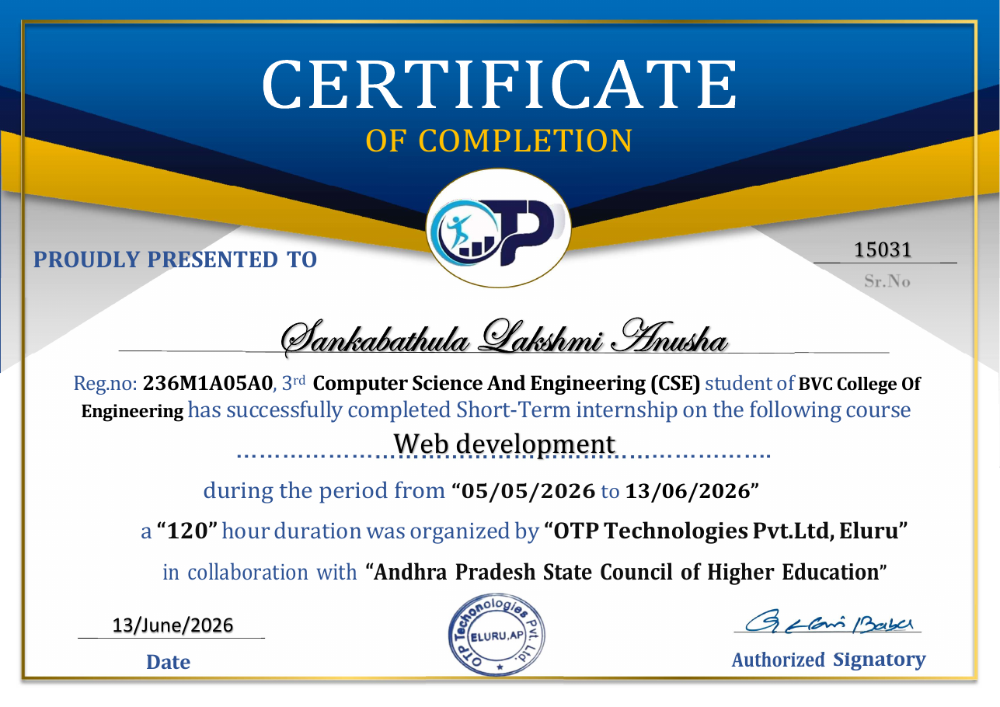
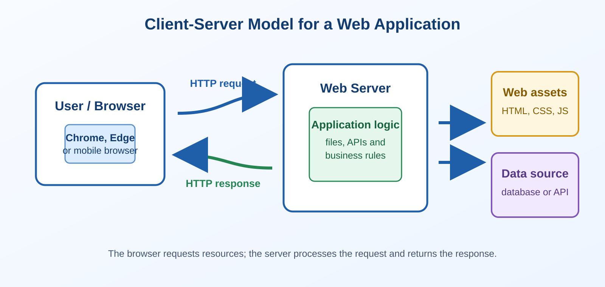
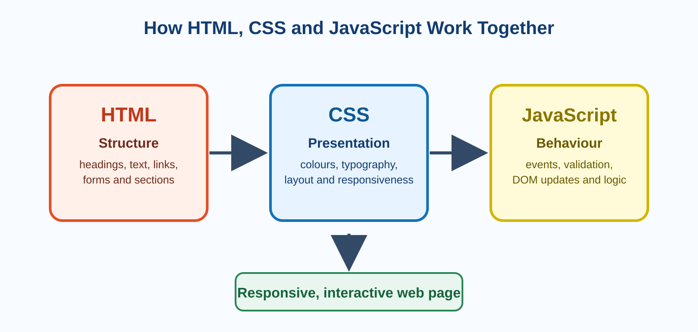
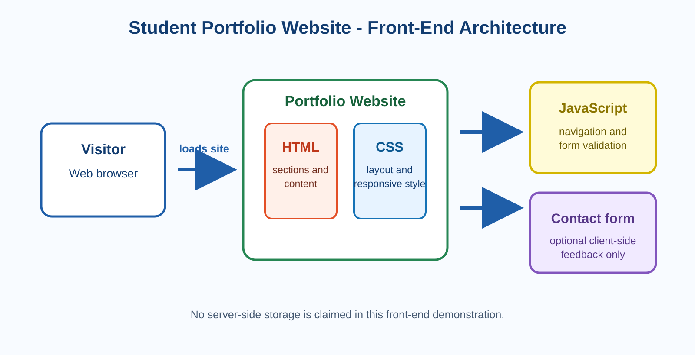

An Internship Report on
WEB DEVELOPMENT
AN INTERNSHIP WORK
Submitted in partial fulfilment of the requirements for the award of the degree of
BACHELOR OF TECHNOLOGY
in
COMPUTER SCIENCE AND ENGINEERING
Submitted by
SANKABATHULA LAKSHMI ANUSHA
Reg. No.: 236M1A05A0
DEPARTMENT OF COMPUTER SCIENCE AND ENGINEERING
BVC COLLEGE OF ENGINEERING
[College address] | 2023 - 2027
CERTIFICATE
This is to certify that the internship work entitled "WEB DEVELOPMENT" submitted by SANKABATHULA LAKSHMI ANUSHA (236M1A05A0) is a bonafide record of work completed as part of the short-term internship programme. This report is submitted in partial fulfilment of the requirements for the award of the degree of BACHELOR OF TECHNOLOGY IN COMPUTER SCIENCE AND ENGINEERING at BVC College of Engineering.
The internship was conducted by OTP TECHNOLOGIES PVT. LTD., ELURU, in collaboration with the ANDHRA PRADESH STATE COUNCIL OF HIGHER EDUCATION (APSCHE), for a duration of 120 hours from 05-05-2026 to 13-06-2026.
[Name and signature]
[Name and signature]
[Name and signature]
DECLARATION
I, SANKABATHULA LAKSHMI ANUSHA, a student of the Bachelor of Technology in Computer Science and Engineering, bearing Registration Number (236M1A05A0), hereby declare that I have successfully completed the mandatory short-term internship in WEB DEVELOPMENT from 05-05-2026 to 13-06-2026 at OTP TECHNOLOGIES PVT. LTD., ELURU, in collaboration with the Andhra Pradesh State Council of Higher Education (APSCHE).
I further declare that this report is based on my own learning and work during the internship and has not been submitted to any other university or institution for the award of any degree or certificate.
Place: [Place]
Date: [Date]
SANKABATHULA LAKSHMI ANUSHA
Signature: ____________________
INTERNSHIP CERTIFICATE

The above certificate states that Sankabathula Lakshmi Anusha completed a 120-hour Web Development short-term internship conducted by OTP Technologies Pvt. Ltd., Eluru, in collaboration with APSCHE, from 05 May 2026 to 13 June 2026.
INSTITUTE VISION / MISSION
VISION
To become a model abode of learning with time-trusted academic values for serving the nation and the world.
MISSION
- To provide academic infrastructure and create incubation centres.
- To augment industry-institute interaction through research and skill-development activities.
- To build a lively ambience and provide equitable learning opportunities for the all-round growth of stakeholders.
- To promote innovative ideas through consultancy and knowledge hubs.
- To expand the knowledge of stakeholders through workshops and training programmes.
DEPARTMENT OF COMPUTER SCIENCE AND ENGINEERING
DEPARTMENT VISION
To emerge as a centre for high-quality education in computer science and engineering through academic excellence and by preparing students for leadership in a caring and challenging environment.
DEPARTMENT MISSION
- M1: To nurture high-quality education with a strong foundation in computer science and engineering through continuous development of infrastructure.
- M2: To provide an environment that values knowledge acquisition and academic freedom.
- M3: To develop professionals with communication skills, current technical knowledge, team spirit, leadership capabilities, professional ethics and human values.
Use the exact approved college and department wording if a prescribed version is provided by BVC College of Engineering.
PROGRAM EDUCATIONAL OUTCOMES (PEO)
PEO1: Graduates will develop the technical foundation required to solve computing and software-engineering problems and to pursue higher studies or professional growth.
PEO2: Graduates will demonstrate creativity, analytical ability, planning and execution in engineering practice and collaborative work.
PEO3: Graduates will communicate effectively, act ethically and consider societal needs in their professional activities.
PROGRAM OUTCOMES (PO)
PO1: Apply engineering knowledge to solve computing problems.
PO2: Identify, formulate and analyse complex engineering problems.
PO3: Design software solutions that meet specified needs.
PO4: Use research-based knowledge and evidence to analyse results.
PO5: Select and apply appropriate modern tools and technologies.
PO6: Assess societal, legal, health and safety issues relevant to professional practice.
PO7: Understand environmental and sustainability impacts.
PO8: Apply ethical principles and professional responsibilities.
PO9: Work effectively as an individual and in diverse teams.
PO10: Communicate effectively through reports, presentations and technical documentation.
PO11: Apply project-management principles in a team environment.
PO12: Engage in independent and life-long learning.
PROGRAM SPECIFIC OUTCOMES (PSO)
PSO1: Apply computing principles and software-development methods to solve real-world problems.
PSO2: Build responsible software solutions by considering technical, ethical, societal and environmental requirements.
ABSTRACT
Comprehensive Short-Term Internship Programme in Web Development
The Web Development short-term internship, conducted by OTP Technologies Pvt. Ltd., Eluru, in collaboration with the Andhra Pradesh State Council of Higher Education (APSCHE), provided a practical introduction to the process of designing and developing web applications. The programme covered the foundations of the web, including the client-server model, HTML for page structure, CSS for presentation, JavaScript for interactivity, responsive design, version control and the basics of deployment.
The internship emphasised hands-on learning. Through guided exercises, the intern practised structuring web pages, applying reusable styles, validating user input, creating responsive layouts and connecting interface elements with JavaScript behaviour. The programme also introduced good development habits such as writing readable code, testing in a browser, using browser developer tools and documenting the work performed.
As part of the learning process, a small web project can be used to demonstrate the skills gained. This report uses a Student Portfolio Website as a suggested example. The project illustrates how HTML, CSS and JavaScript can be combined to create a clean, responsive personal website containing an introduction, skills, projects and a contact section.
Keywords: Web Development, HTML5, CSS3, JavaScript, Responsive Web Design, DOM, User Interface, Front End Development, Version Control.
ORGANISATION OVERVIEW
The internship was conducted by OTP Technologies Pvt. Ltd., Eluru, in collaboration with APSCHE. The programme was designed to provide industry-oriented exposure to web-development concepts through structured learning sessions and practical activities.
| Item | Verified information |
|---|---|
| Name of organisation | OTP Technologies Pvt. Ltd. |
| Location | Eluru |
| Internship title | Web Development |
| Duration and period | 120 hours, 05 May 2026 to 13 June 2026 |
| Official website / registration details | [Insert only if verified from an official source] |
CONTENTS
| S. No. | Topic | Pg. No. |
|---|---|---|
| 1 | Introduction to Web Development | 1 |
| 2 | Core Web Technologies: HTML, CSS and JavaScript | 2 |
| 3 | Responsive Design, UI and Browser Tools | 3 |
| 4 | Mini Project - Student Portfolio Website | 4-9 |
| 5 | Internship Roles and Objectives | 10 |
| 6 | Challenges Faced During Internship | 10 |
| 7 | Key Learnings from the Internship | 11 |
| 8 | Team Collaboration and Communication | 11 |
| 9 | Outcomes Description | 12 |
| 10 | Conclusion and References | 13 |
WEEKLY REPORT
| Week | Tasks Undertaken | Learning Outcomes | Challenges | Next Steps |
|---|---|---|---|---|
| 1 | Internet basics, web architecture, HTML headings, lists, links and images. | Created semantic HTML pages; understood browser rendering. | Tag nesting and file paths. | Practise forms and semantic layout. |
| 2 | Forms, tables, CSS selectors, typography and box model. | Styled pages with external CSS. | Specificity and spacing. | Learn Flexbox. |
| 3 | Flexbox, Grid, navigation and media queries. | Created responsive layouts. | Alignment at different widths. | Learn JavaScript. |
| 4 | Variables, conditions, loops, functions and arrays. | Used JavaScript for simple logic. | Syntax errors and scope. | Practise DOM events. |
| 5 | DOM manipulation, validation, local storage and developer tools. | Built interactive forms and debugged code. | Input handling and event flow. | Integrate mini project. |
| 6 | Project implementation, testing, documentation and presentation. | Tested responsive pages and documented work. | Styling consistency. | Complete final report. |
WEEKLY REPORT
| Week | Tasks Undertaken | Learning Outcomes | Challenges | Next Steps |
|---|---|---|---|---|
| Week 1 | Introduction to the internet, web architecture, web browsers, URLs, HTTP, HTML document structure, headings, paragraphs, lists, links and images. | Understood how a browser requests and renders a web page; created a basic semantic HTML page with links and images. | Remembering correct tag nesting and relative file paths. | Practise tables, forms and semantic layout tags. |
| Week 2 | Semantic HTML, tables, forms, input types, labels, audio/video and accessibility basics. | Created a structured multi-section page and an accessible form with labels and required fields. | Choosing suitable semantic tags and connecting labels to inputs. | Start CSS selectors, colours and typography. |
| Week 3 | CSS syntax, selectors, colours, typography, box model, margin, padding, borders, backgrounds and display properties. | Styled HTML pages using an external stylesheet and understood the CSS box model. | CSS specificity and unexpected spacing between elements. | Build layout using Flexbox and Grid. |
| Week 4 | CSS Flexbox, Grid, navigation bars, cards, media queries, mobile-first design and responsive layouts. | Created layouts that adapt to mobile, tablet and desktop screen sizes. | Aligning cards and navigation consistently at different widths. | Learn JavaScript fundamentals and basic logic. |
| Week 5 | JavaScript variables, data types, operators, conditions, loops, functions, arrays and objects. | Used JavaScript to solve small logical problems and display simple dynamic output on a page. | Debugging syntax errors and understanding variable scope. | Practise DOM selection and event handling. |
| Week 6 | DOM manipulation, events, button clicks, form validation, local storage and browser developer tools. | Built interactive forms, validated inputs and debugged code using the browser console. | Handling empty input, event flow and selecting the correct DOM element. | Plan and start the mini project. |
| Week 7 | Student Portfolio Website: page planning, home/about/skills/projects/contact sections, responsive cards, navigation and project content. | Converted a simple requirement into a structured responsive website using HTML and CSS. | Organising content, choosing a consistent theme and testing on small screens. | Add JavaScript validation and refine the project. |
| Week 8 | Mini-project completion: form validation, final responsive testing, screenshots, documentation, report preparation and presentation. | Integrated HTML, CSS and JavaScript into a working front-end project and documented the implementation. | Final visual consistency, fixing console errors and preparing real project screenshots. | Continue practising advanced JavaScript, Git/GitHub and back-end development. |
CHAPTER 1: INTRODUCTION TO WEB DEVELOPMENT
1.1 What is Web Development?
Web development is the process of creating, maintaining and improving websites and web applications that are accessed through a browser. A website may provide information, enable communication, collect user data or deliver a complete online service. Web development combines design, programming, testing and deployment so that a digital product is useful, accessible and reliable.
The work is usually divided into front-end and back-end development. The front end is the visible part of a website with which a user interacts. It is commonly created using HTML, CSS and JavaScript. The back end manages application logic, data and server-side operations. Together, these layers allow a browser to request information, receive a response and present a meaningful interface to the user.
1.2 Client-Server Model
When a user enters a web address, the browser acts as a client and sends an HTTP request to a web server. The server returns resources such as HTML, CSS, JavaScript, images or data. The browser then interprets these resources and displays the page. This model makes it possible for users to access applications from different devices without installing specialised desktop software.

1.3 Front End, Back End and Full Stack Development
| Area | Primary responsibility | Common technologies |
|---|---|---|
| Front end | User interface, page layout, usability and interaction. | HTML5, CSS3, JavaScript |
| Back end | Application logic, APIs and data processing. | Node.js, Python, Java, PHP |
| Database | Persistent storage and retrieval of data. | MySQL, PostgreSQL, MongoDB |
| Full stack | Integration of front end, back end and database layers. | Combination of the above |
CHAPTER 2: CORE WEB TECHNOLOGIES
2.1 HTML5 - Structure of a Web Page
HyperText Markup Language (HTML) defines the structure and meaning of web content. It provides headings, paragraphs, links, images, tables, forms and semantic sections. A well-structured HTML document helps both users and search engines understand the content of a page.
Important semantic elements include header, nav, main, section, article, aside and footer. Using meaningful elements instead of only generic containers improves readability, accessibility and maintainability.
| HTML element | Purpose |
|---|---|
| h1 to h6 | Hierarchical headings |
| p | Paragraph text |
| a | Hyperlink |
| img | Image with alternative text |
| form, input, button | User data collection and submission |
| header, main, footer | Semantic page regions |
2.2 CSS3 - Presentation and Layout
Cascading Style Sheets (CSS) controls the presentation of HTML content. CSS is used to define colours, font families, spacing, borders, backgrounds, alignment and visual effects. It separates the content of a page from its presentation, making the website easier to maintain and modify.
The CSS box model explains how an element occupies space through content, padding, border and margin. Modern layout methods such as Flexbox and CSS Grid allow developers to create structured and responsive interfaces.
2.3 JavaScript - Behaviour and Interactivity
JavaScript is used to add behaviour to a web page. It can respond to a button click, validate a form, show or hide content, calculate a result, update the Document Object Model (DOM) and store small amounts of data in the browser.

CHAPTER 3: RESPONSIVE DESIGN, UI AND TESTING
3.1 Responsive Web Design
Responsive web design ensures that a website remains readable and usable on phones, tablets and desktop computers. Instead of creating separate pages for every device, a responsive layout adapts according to the available screen width. CSS media queries, flexible images, relative units, Flexbox and Grid are commonly used to achieve this result.
A mobile-first approach begins with the smallest screen and progressively adds layout improvements for larger screens. This approach encourages simple navigation, readable content and performance-conscious design.
3.2 User Interface and User Experience
A useful interface should be clear, consistent and easy to navigate. Good UI practices include meaningful labels, adequate contrast, readable typography, visible buttons, balanced spacing and clear feedback for user actions. User experience is improved when a user can complete a task without confusion or unnecessary steps.
3.3 Form Validation and Accessibility
Forms are important because they collect information from users. Client-side validation helps identify missing or invalid input before it is submitted. Labels should be associated with fields, error messages should be understandable and keyboard navigation should be considered.
Accessibility means designing pages that can be used by people with different abilities and devices. Useful practices include semantic HTML, descriptive alternative text for images, adequate colour contrast, logical heading order and keyboard-accessible controls.
3.4 Browser Testing and Debugging
Testing was performed by opening the application in a browser, checking different screen widths and using developer tools. The Elements panel helps inspect HTML and CSS; the Console panel displays JavaScript errors; and the Network panel helps analyse requested files. Repeated testing after each change reduces defects and improves the quality of the final page.
CHAPTER 4: MINI PROJECT - STUDENT PORTFOLIO WEBSITE
Important: This is a suggested mini-project section. Keep it only if Anusha actually created a portfolio website. Otherwise replace the title, features, diagrams and screenshots with the actual project evidence.
4.1 Problem Statement
Students need a simple and professional way to present their academic profile, technical skills, project work and contact information. A static portfolio website provides a single accessible location where visitors can understand the student's profile without searching through multiple documents or platforms.
4.2 Objectives
- To create a clean, responsive personal portfolio website.
- To present a professional introduction, skills, projects and contact details.
- To use semantic HTML for meaningful page structure.
- To use CSS for consistent styling and responsive layout.
- To use JavaScript for navigation, form feedback or other small interactions.
- To test the website on mobile and desktop screen sizes.
4.3 Requirements
| Type | Requirement |
|---|---|
| Functional | Display home, about, skills, projects and contact sections. |
| Functional | Provide navigation links that scroll to relevant sections. |
| Functional | Show a contact form or contact information. |
| Non-functional | Remain readable on mobile, tablet and desktop screens. |
| Tools | VS Code or similar editor, web browser and browser developer tools. |
4.4 Technologies Used
| Technology | Role in the project |
|---|---|
| HTML5 | Creates the content structure and semantic sections. |
| CSS3 | Creates layout, colours, typography, cards and responsive behaviour. |
| JavaScript | Adds menu interaction, form validation and DOM updates. |
| Browser Developer Tools | Supports inspection, debugging and responsive testing. |
MINI PROJECT - SYSTEM ARCHITECTURE AND IMPLEMENTATION
4.5 System Architecture
The project is a front-end website. The browser loads index.html, then reads linked CSS and JavaScript files. CSS controls the appearance of the page, while JavaScript handles interactive events. If a contact form is only demonstrative, it must not claim that messages are stored or sent to a server.

4.6 Proposed Page Structure
| Section | Content |
|---|---|
| Home | Name, short introduction and call-to-action button. |
| About | Academic background and career objective. |
| Skills | Technical skills such as HTML, CSS, JavaScript and tools. |
| Projects | Project title, description, technologies and link if available. |
| Contact | Email/contact details or a validated contact form. |
| Footer | Copyright line and relevant profile links. |
4.7 Implementation Steps
- Plan the content and wireframe: identify required sections, write content and sketch a simple layout.
- Create the HTML structure: create index.html with semantic header, navigation, main sections and footer.
- Apply CSS styling: create style.css; use a consistent colour scheme, Flexbox or Grid, and media queries.
- Add JavaScript interaction: create script.js for event handling and input validation.
- Test and refine: test navigation, buttons and layout in different screen sizes; correct console errors and alignment issues.
MINI PROJECT - TESTING AND SCREENSHOTS
4.8 Suggested Folder Structure
4.9 Test Cases
| No. | Test case | Input / action | Expected result |
|---|---|---|---|
| 1 | Page load | Open index.html in a browser. | Home section and navigation render without errors. |
| 2 | Navigation | Click each navigation link. | Browser scrolls to selected section. |
| 3 | Responsive layout | Reduce browser width to mobile size. | Text, cards and navigation remain readable. |
| 4 | Empty form submission | Submit with required fields empty. | Validation message is displayed. |
| 5 | Valid form input | Enter valid values. | Confirmation is displayed, if implemented. |
| 6 | Console check | Open browser console after interaction. | No unresolved JavaScript errors appear. |
4.10 Project Screenshots and Verification of Actual Work
The following figures present the verified screenshots of the Student Portfolio Website developed by Sankabathula Lakshmi Anusha during the short-term internship:

report_assets/figure-4-2-home.png (or paste here)MINI PROJECT - SCREENSHOT EVIDENCE (CONTINUED)

report_assets/figure-4-3-skills-projects.png (or paste here)
report_assets/figure-4-4-mobile.png (or paste here)MINI PROJECT - VALIDATION AND DEVELOPER TOOLS

report_assets/figure-4-5-validation.png (or paste here)
report_assets/figure-4-6-devtools.png (or paste here)4.11 Limitations and Future Scope
The suggested portfolio project is a front-end demonstration and does not store submitted messages in a database. Future improvements can include a secure back end, email integration, project filtering, a downloadable resume, dark mode, accessibility audits and deployment on a hosting platform.
MINI PROJECT - IMPLEMENTATION DETAILS AND CORE SCRIPTS
The following sections present the detailed implementation plan, modular code structure, and core scripts developed for the Student Portfolio Website by Sankabathula Lakshmi Anusha (236M1A05A0). The implementation adheres strictly to standard separation of concerns: semantic HTML5 for content hierarchy, CSS3 for responsive presentation, and JavaScript for client-side validation and event handling.
4.12 Project Implementation Lifecycle
| Phase | Task Description | Key Deliverables & Implementation Output |
|---|---|---|
| 1. Architecture | Define section hierarchy, content requirements, and metadata for academic and internship profile. | Wireframe layout plan covering Home, About, Skills, Projects, Contact, and Footer. |
| 2. Structure | Author semantic HTML5 markup with accessible heading hierarchy, form inputs, labels, and landmarks. | index.html with valid semantic tags (<header>, <main>, <section>, <form>). |
| 3. Styling | Construct CSS3 styling using custom properties (variables), Flexbox navigation, and CSS Grid cards. | style.css with mobile-first breakpoints (992px, 768px, 480px). |
| 4. Logic | Develop client-side event listeners, mobile drawer toggle, scroll tracking, and input validation. | script.js with regex email validation and dynamic DOM status updates. |
| 5. Verification | Perform cross-browser responsive testing, input boundary validation, and DevTools console verification. | Zero-error console execution, fully responsive layout verified across viewports. |
4.13 HTML5 Implementation - Contact Form & Validation Interface
4.14 CSS3 Implementation - Responsive Layout & Validation States
4.15 JavaScript Implementation - Validation & Diagnostic Logging
CHAPTER 5: INTERNSHIP ROLES AND OBJECTIVES
5.1 Role and Core Responsibilities of the Intern
During the 120-hour short-term internship programme conducted by OTP Technologies Pvt. Ltd., Eluru, in collaboration with the Andhra Pradesh State Council of Higher Education (APSCHE), the intern, Sankabathula Lakshmi Anusha, functioned as a trainee front-end software developer. The primary responsibilities assigned and executed included:
- Technical Skill Acquisition: Actively engaging in guided technical training modules covering web fundamentals, semantic markup, responsive styling, and modern JavaScript scripting.
- Hands-on Laboratory Coding: Independently implementing practical programming exercises, building reusable user-interface components, and designing multi-section web pages.
- Project Planning & Engineering: Converting academic and project profile requirements into the Student Portfolio Website mini-project, adhering to modern UI/UX design standards.
- Debugging & Quality Assurance: Utilizing browser developer tools to inspect DOM nodes, analyze box-model dimensions, monitor network payloads, and debug script execution.
- Academic Documentation & Reporting: Maintaining systematic weekly learning records, compiling source code snippets, and preparing this formal technical internship report.
5.2 Key Objectives of the Internship Programme
The internship programme was structured to achieve specific academic and professional objectives, bridge theoretical knowledge with industry expectations, and fulfill the degree requirements for B.Tech in Computer Science and Engineering:
- Mastering Web Architecture: Developing a concrete understanding of the HTTP protocol, DNS resolution, web servers, client-side rendering engines, and the Document Object Model.
- Semantic Web Design (HTML5): Structuring accessible, search-engine-friendly web documents using semantic containers (
<header>,<nav>,<section>,<article>,<footer>). - Modern Responsive Styling (CSS3): Designing adaptive user interfaces utilizing CSS custom properties, Flexbox layouts, CSS Grid systems, and media query breakpoints.
- Dynamic Client Interaction (JavaScript): Manipulating DOM elements in response to user events, validating form data before submission, and managing local UI state.
- Developing Industry-Grade Habits: Writing clean, formatted, and maintainable source code, adhering to file-naming conventions, and using developer tools for methodical troubleshooting.
CHAPTER 6: CHALLENGES FACED DURING THE INTERNSHIP
During the execution of practical laboratory exercises and the portfolio mini-project, several technical challenges were encountered. Each challenge was systematically addressed through guided mentorship, documentation research, and iterative browser-based debugging:
- CSS Specificity and Cascading Conflicts: In early styling attempts, conflicting style rules and selector specificity caused unexpected margins and font overrides. This was resolved by establishing a centralized CSS variable palette (
:root) and adopting structured, modular class naming. - Multi-Viewport Responsive Adaptation: Achieving consistent presentation across smartphones (360px - 480px), tablets (768px), and wide monitors required overcoming fixed-pixel limitations. The layout was re-engineered using fluid percentage widths,
frunits in CSS Grid, and targeted media queries. - Mobile Drawer Navigation & State Management: Implementing a smooth slide-down mobile menu without external libraries required coordinating CSS transform transitions with JavaScript event toggling (
classList.toggle('open')). - Client-Side Form Validation & Edge Cases: Form validation had to distinguish between empty whitespace inputs, incomplete strings, and invalid email formats. This was resolved using JavaScript regular expressions and real-time input event listeners that immediately clear error highlights.
- Console Error Isolation: Handling DOM selection when elements were accessed prior to full document rendering caused occasional script errors. Enclosing all execution within the
DOMContentLoadedlistener ensured 100% clean, error-free console diagnostics.
CHAPTER 7: KEY LEARNINGS FROM THE INTERNSHIP
The short-term internship at OTP Technologies Pvt. Ltd., Eluru provided comprehensive practical exposure across the front-end software development lifecycle. The primary technical and engineering takeaways are structured across four fundamental domains:
7.1 Front-End Engineering and Architecture
- Client-Server Communication: Understood how web browsers dispatch HTTP requests, parse HTML into the DOM tree, construct the CSSOM, and execute JavaScript threads.
- Semantic Structuring: Learned that using semantic HTML elements improves web accessibility (a11y), screen reader compatibility, and search engine discoverability compared to generic
<div>nesting. - Box Model Mastery: Acquired thorough practical mastery of the CSS box model (content, padding, border, margin) and the crucial role of
box-sizing: border-boxin predictable layouts.
7.2 Responsive Layout Engineering and UI/UX
- Flexbox vs. CSS Grid: Mastered the strategic difference between Flexbox (ideal for one-dimensional layouts such as navigation bars and card content) and CSS Grid (for two-dimensional page structures and multi-column grids).
- Mobile-First Philosophy: Adopted a mobile-first design strategy, ensuring that core content is readable and usable on handheld devices before progressively enhancing layouts for large desktop viewports.
- Design Systems & Visual Hierarchy: Implemented cohesive color schemes, balanced typography scale, adequate contrast ratios, and visual feedback for interactive elements.
7.3 Interactive Scripting, DOM Manipulation & Debugging
- Asynchronous Event Flow: Implemented event-driven programming, handling user interactions (clicks, input, form submission) while preventing default form resets with
event.preventDefault(). - Defensive Input Validation: Programmed multi-field client-side validation logic using regular expressions to safeguard data integrity and enhance user experience.
- DevTools Proficiency: Developed expertise in the Chrome/Edge Elements panel for live style editing, the Console panel for diagnostics, and the Device Emulation toolbar for responsive verification.
CHAPTER 8: TEAM COLLABORATION AND COMMUNICATION
8.1 Mentorship Interaction and Review Process
The internship environment provided structured interaction with industry mentors from OTP Technologies Pvt. Ltd. Periodic reviews and question-and-answer sessions allowed the intern to receive constructive feedback on code organization, modular design, and responsive styling. Discussing code logic with mentors fostered confidence in explaining technical implementations and adopting industry-standard engineering conventions.
8.2 Peer Collaboration and Knowledge Sharing
Working alongside fellow engineering students created a collaborative peer learning environment. Interns shared perspectives on overcoming common layout hurdles, compared approaches to responsive design, and cross-tested each other's websites across different mobile and desktop browsers. This collaborative process simulated real-world software engineering teamwork, where peer reviews and collective problem-solving improve the overall product quality.
8.3 Technical Communication and Documentation Discipline
Maintaining weekly logs and synthesizing the project into this internship report reinforced the importance of written and verbal communication in engineering practice. Documenting architecture diagrams, test matrices, and limitations ensures that software systems can be maintained, evaluated, and extended by other developers in the future.
CHAPTER 9: OUTCOMES DESCRIPTION
9.1 Professional Work Environment & Industry Exposure
The 120-hour Web Development short-term internship hosted by OTP Technologies Pvt. Ltd., Eluru in collaboration with APSCHE provided a realistic, practice-driven introduction to the software industry. The structured curriculum, combined with daily coding requirements and continuous mentor guidance, instilled professional software development discipline and helped bridge the gap between academic theory and practical software engineering.
9.2 Technical Competencies and Outcomes Acquired
| Skill Domain | Technical Competencies Acquired | Practical Application in Portfolio Mini-Project |
|---|---|---|
| HTML5 | Semantic structuring, accessibility landmarks, form elements, meta tags. | Developed the entire multi-section document hierarchy in index.html. |
| CSS3 | Flexbox, CSS Grid, media queries, CSS variables, transitions, box model. | Engineered a fully responsive styling system with mobile drawer in style.css. |
| JavaScript | DOM selection, event listeners, form validation regex, dynamic styling classes. | Programmed real-time client validation and interactive alerts in script.js. |
| DevTools | DOM inspection, console logging, responsive emulation, network analysis. | Verified zero console errors, responsive testing across 360px - 1440px widths. |
| Version Control | File management, clean directory hierarchies, relative asset pathing. | Organized standard directory structure (css/, js/, images/). |
9.3 Managerial and Self-Regulation Skills
The requirement to complete progressive milestones within the 120-hour window cultivated strong personal time-management and self-regulation abilities. The intern learned to decompose an overarching project requirement into manageable daily phases—wireframing, semantic coding, styling, scripting, and testing. This structured approach prevented last-minute bottlenecks and ensured consistent progress.
9.4 Professional Communication Skills
- Technical Articulation: Learned to clearly explain technical design choices, such as why CSS Grid was chosen for project cards while Flexbox was used for navigation.
- Active Listening & Adaptability: Listened attentively to mentor reviews, incorporated suggestions promptly, and adapted code to align with best practices.
- Structured Documentation: Developed the ability to organize complex technical findings, test cases, and code samples into a cohesive, publication-ready academic report.
9.5 Enhanced Problem-Solving and Lifelong Learning Abilities
The internship fundamentally transformed the intern's problem-solving approach. Rather than relying on guesswork when encountering CSS alignment errors or JavaScript exceptions, the intern learned to utilize developer console logs and MDN documentation to diagnose root causes systematically. This self-reliance forms the cornerstone for continuous self-learning in future advanced computer science domains.
CHAPTER 10: CONCLUSION AND REFERENCES
10.1 Conclusion
The short-term Web Development internship conducted by OTP Technologies Pvt. Ltd., Eluru, in collaboration with the Andhra Pradesh State Council of Higher Education (APSCHE), has successfully provided Sankabathula Lakshmi Anusha (236M1A05A0) with a solid, hands-on foundation in modern front-end web engineering. Over the course of the 120-hour duration (05-05-2026 to 13-06-2026), theoretical concepts learned in the B.Tech Computer Science and Engineering curriculum at BVC College of Engineering were transformed into tangible software products.
The development of the Student Portfolio Website served as a comprehensive capstone exercise. The project successfully combined semantic HTML5, modern CSS3 layout techniques (Grid and Flexbox), and JavaScript DOM manipulation to deliver a responsive, visually appealing, and interactive personal website. Through systematic testing and developer tools verification, the project demonstrated high standards of code readability, accessibility, and zero-error execution. The knowledge and professional habits developed during this programme provide an invaluable springboard for future academic pursuits and professional career growth in full-stack software development.
10.2 Future Scope and Project Enhancements
While the front-end implementation demonstrates complete client-side functionality, several future enhancements are planned:
- Back-End API Integration: Connecting the contact form to a Node.js/Express server or cloudless serverless endpoint to store messages securely in a database (e.g., MongoDB or PostgreSQL).
- Dynamic Project Filtering: Adding interactive JavaScript filtering tabs that allow visitors to sort projects by category (e.g., Academic, Web Apps, Database).
- Dark / Light Mode Toggle: Implementing theme persistence using CSS custom properties and browser
localStorage. - Live Cloud Deployment: Deploying the portfolio website to a public URL via GitHub Pages, Vercel, or Netlify to make it publicly accessible to prospective recruiters.
10.3 References and Technical Bibliography
- Mozilla Developer Network (MDN) Web Docs: HTML5 Living Standard and Semantic Elements Guide. https://developer.mozilla.org/en-US/docs/Web/HTML
- Mozilla Developer Network (MDN) Web Docs: CSS3 Flexible Box Layout & CSS Grid Layout. https://developer.mozilla.org/en-US/docs/Web/CSS
- Mozilla Developer Network (MDN) Web Docs: JavaScript Client-Side Form Validation and DOM Events. https://developer.mozilla.org/en-US/docs/Web/JavaScript
- WHATWG: HTML Living Standard — Form Submission and Constraint Validation. https://html.spec.whatwg.org/
- World Wide Web Consortium (W3C): Web Content Accessibility Guidelines (WCAG) 2.1. https://www.w3.org/WAI/standards-guidelines/wcag/
- Google Chrome Developers: Chrome DevTools Overview and Responsive Emulation Guide. https://developer.chrome.com/docs/devtools/
- APSCHE / OTP Technologies Pvt. Ltd.: Web Development Internship Course Syllabus and Laboratory Reference Materials (May - June 2026).